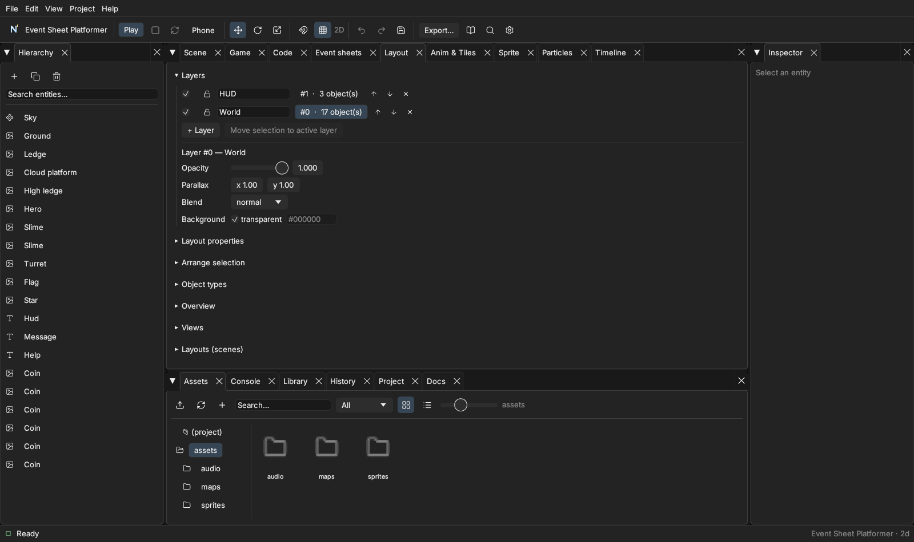

Layout, layers and objects
The Layout tab collects everything that is about where things are in a scene (Construct calls a scene a layout).

Layers#
Every object has a layer number; higher numbers are drawn later (in front). In the panel each layer has a name, a visible checkbox, a 🔒 lock (locked layers cannot be picked in the scene view), and ▲▼ to reorder. Click a layer to edit:
- Opacity — fades everything on the layer.
- Parallax —
0pins the layer to the screen (a HUD),1moves with the world,0.5scrolls half as fast (distant hills). - Blend — normal, add (glow), multiply, screen.
- Background — a colour behind the layer when it is not transparent.
The same properties exist at runtime: change
scene.settings.layers["1"].opacityfrom a script or an event and it takes effect at once.
Layout properties#
Layout size limits Bound-to-layout objects and the camera; tick unbounded scrolling to let the camera leave it. Event sheet links the layout to its sheet. Guides are lines objects snap to.
Rulers and guides#
The scene view has rulers on the top and left. Drag from a ruler to make a guide; drag a guide to move it; drop it back on the ruler to delete it. Objects snap to guides while you move them.
Arrange#
Select two or more objects (Hierarchy) and use Left / Centre / Right / Top / Middle / Bottom to align them, or Distribute three or more evenly.
Object types and instances#
An object type is every entity with the same name — what event sheets call an object. ＋ Instance adds another one; Sync instances copies the first instance's components, behaviors, scripts and tags to all the others (positions stay), so a change made once reaches every coin. Drag an object type (⠿) onto the Overview map to place a new instance at that spot; click the map to look there.
Views and layouts#
Save current view remembers where the scene view is looking; Go to returns. Layouts (scenes) lists your scenes: open one, create a new one, duplicate the current one or choose the start layout.